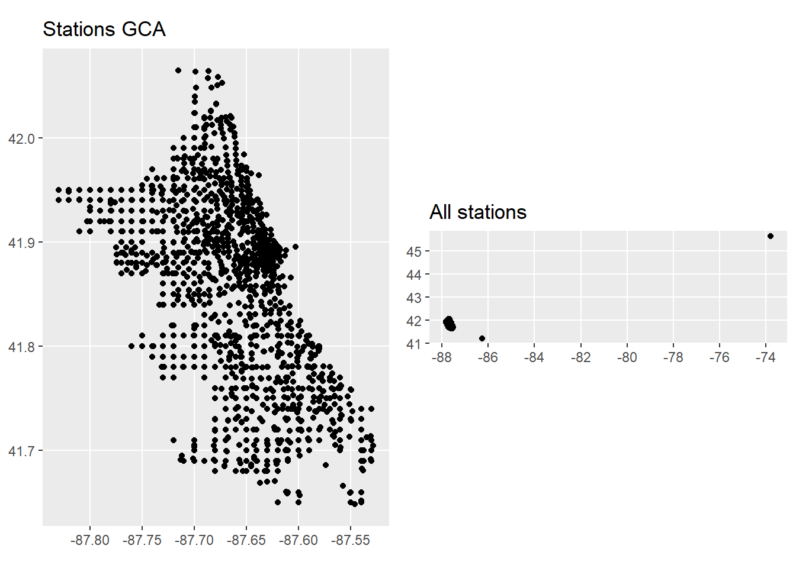
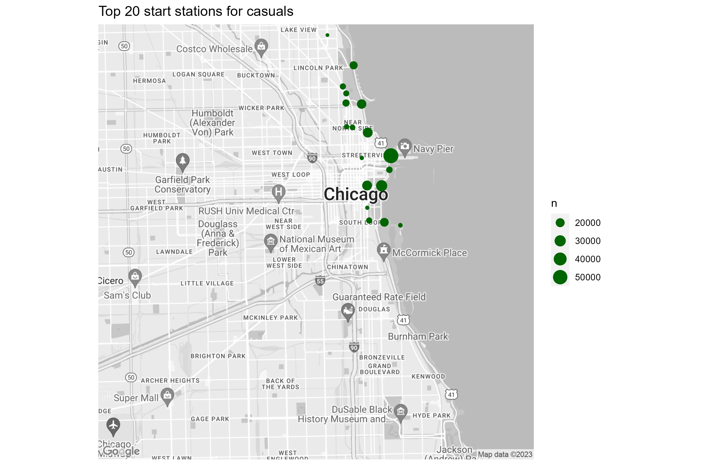
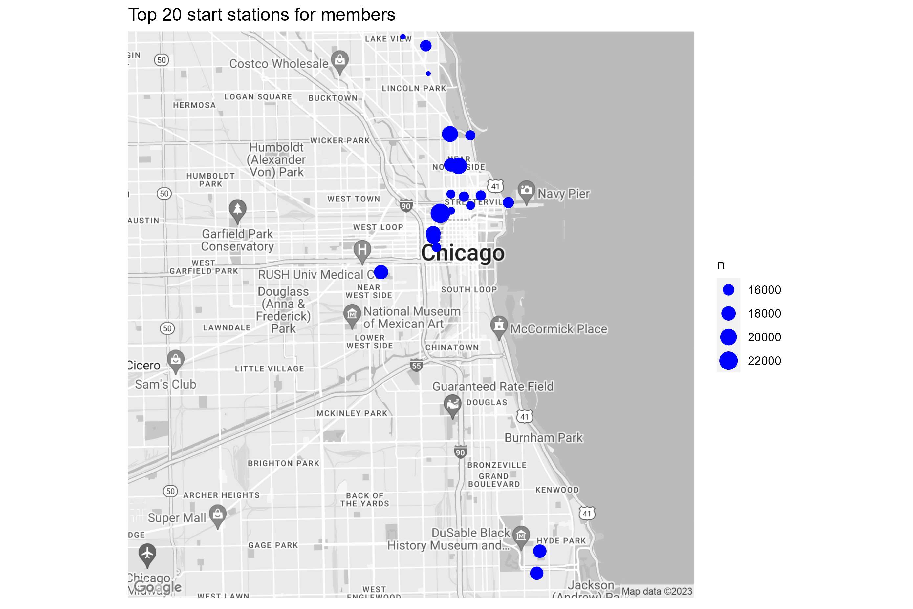
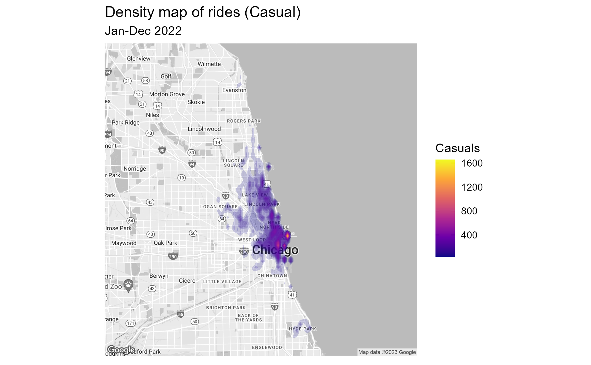
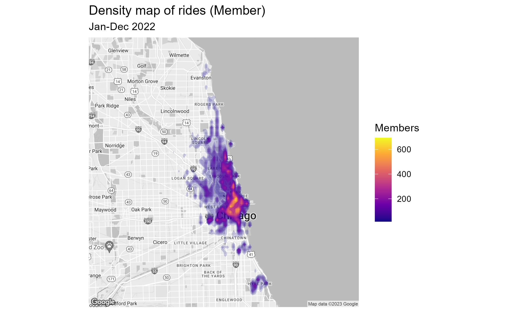

Case Study: How Does a Bike-Share Navigate Speedy Success
Hartmut Schaefer
II. Data Cleaning in R
Pre-requisites
Dataframe names:
- df_trips_YYYYMM: raw data input for each month
- df_trips_all_raw: merged data of all months
- df_trips_all_clean_xxx: cleaned data
- df_trips_all_trans: added columns for duration, weekdays,
hours
- df_trips_all_fct: format categorical variables into
factors
- df_trips_all_final: removed outliers
- df_trips_all_final_dense: removed non essential
columns
Install and load packages:
library(tidyverse)
library(lubridate)
library(here)
library(gridExtra)
library(sf)
1 Importing raw data
1.1 Importing data
Datasets
Please download the following data files from the [Link] (https://divvy-tripdata.s3.amazonaws.com/index.html) and
copy them into your working directory “data” of RStudio
Data set: ‘202201-divvy-tripdata.csv’ (data for one month
Jan. 2022)
Data set: ‘202202-divvy-tripdata.csv’ (data for one month
Feb. 2022)
Data set: ‘202203-divvy-tripdata.csv’ (data for one month
Mar. 2022)
Data set: ‘202204-divvy-tripdata.csv’ (data for one month
Apr. 2022)
Data set: ‘202205-divvy-tripdata.csv’ (data for one month May.
2022)
Data set: ‘202206-divvy-tripdata.csv’ (data for one month
Jun. 2022)
Data set: ‘202207-divvy-tripdata.csv’ (data for one month
Jul. 2022)
Data set: ‘202208-divvy-tripdata.csv’ (data for one month
Aug. 2022)
Data set: ‘202209-divvy-tripdata.csv’ (data for one month
Sep. 2022)
Data set: ‘202210-divvy-tripdata.csv’ (data for one month
Oct. 2022)
Data set: ‘202211-divvy-tripdata.csv’ (data for one month
Nov. 2022)
Data set: ‘202212-divvy-tripdata.csv’ (data for one month
Dec. 2022)
Reading 12 CSV files into separated dataframes from the local storage:
# ------------------------------------------------------------ set wd with here
file_202201 <- here("data", "202201-divvy-tripdata.csv")
file_202202 <- here("data", "202202-divvy-tripdata.csv")
file_202203 <- here("data", "202203-divvy-tripdata.csv")
file_202204 <- here("data", "202204-divvy-tripdata.csv")
file_202205 <- here("data", "202205-divvy-tripdata.csv")
file_202206 <- here("data", "202206-divvy-tripdata.csv")
file_202207 <- here("data", "202207-divvy-tripdata.csv")
file_202208 <- here("data", "202208-divvy-tripdata.csv")
file_202209 <- here("data", "202209-divvy-tripdata.csv")
file_202210 <- here("data", "202210-divvy-tripdata.csv")
file_202211 <- here("data", "202211-divvy-tripdata.csv")
file_202212 <- here("data", "202212-divvy-tripdata.csv")
# ------------------------------------------------------------------ read files
df_trips_202201 <- read_csv(file_202201)
df_trips_202202 <- read_csv(file_202202)
df_trips_202203 <- read_csv(file_202203)
df_trips_202204 <- read_csv(file_202204)
df_trips_202205 <- read_csv(file_202205)
df_trips_202206 <- read_csv(file_202206)
df_trips_202207 <- read_csv(file_202207)
df_trips_202208 <- read_csv(file_202208)
df_trips_202209 <- read_csv(file_202209)
df_trips_202210 <- read_csv(file_202210)
df_trips_202211 <- read_csv(file_202211)
df_trips_202212 <- read_csv(file_202212)
# ------------------------------------------------------------------- clean up
rm(file_202201,
file_202202,
file_202203,
file_202204,
file_202205,
file_202206,
file_202207,
file_202208,
file_202209,
file_202210,
file_202211,
file_202212
)
1.2 Union data
Next we will merge all 12 dataframes into one single dataframe with all the raw data.
# ------------------------------------------ union all files into one data frame
df_trips_all_raw <- df_trips_202201 %>%
union_all(df_trips_202202) %>%
union_all(df_trips_202203) %>%
union_all(df_trips_202204) %>%
union_all(df_trips_202205) %>%
union_all(df_trips_202206) %>%
union_all(df_trips_202207) %>%
union_all(df_trips_202208) %>%
union_all(df_trips_202209) %>%
union_all(df_trips_202210) %>%
union_all(df_trips_202211) %>%
union_all(df_trips_202212)
# ---------------------------------------------------------- remove single files
rm(df_trips_202201,
df_trips_202202,
df_trips_202203,
df_trips_202204,
df_trips_202205,
df_trips_202206,
df_trips_202207,
df_trips_202208,
df_trips_202209,
df_trips_202210,
df_trips_202211,
df_trips_202212
)Result:
- Numbers of rows: 5,667,717
- Numbers of columns: 13
2. Cleaning the data
2.1 Check data integrity
2.1.1 Check numbers of NAs
colSums(is.na(df_trips_all_raw)) %>%
data.frame() %>%
print()## .
## ride_id 0
## rideable_type 0
## started_at 0
## ended_at 0
## start_station_name 833064
## start_station_id 833064
## end_station_name 892742
## end_station_id 892742
## start_lat 0
## start_lng 0
## end_lat 5858
## end_lng 5858
## member_casual 0Result:
- About 1.7 million start or end station names are missing.
- Geo-codes are mostly available. However, the reconstruction of
station names from geo-codes would require a more deep-dive into
map-matching and is out of the scope of this project. We, therefore have
to remove all rows with NAs, which is acceptable since we still have
about 75% of data left.
2.1.2 Check time range
df_trips_all_raw %>%
summarise(
min_start = min(started_at),
max_start = max(started_at),
min_end = min(ended_at),
max_end = max(ended_at)) %>%
pivot_longer(cols = 1:4,
names_to = "station",
values_to = "time range") %>%
print()## # A tibble: 4 × 2
## station `time range`
## <chr> <dttm>
## 1 min_start 2022-01-01 00:00:05
## 2 max_start 2022-12-31 23:59:26
## 3 min_end 2022-01-01 00:01:48
## 4 max_end 2023-01-02 04:56:45
Result:
- max end datetime exceeded by two days (2023-01-02). This will be
cleaned in the outlier removal step
2.1.3 Check for time dependency issues
df_trips_all_raw %>%
filter(started_at > ended_at) %>%
summarise(n_time_conflict = n())## # A tibble: 1 × 1
## n_time_conflict
## <int>
## 1 100
Result:
- There are 100 observations with a time conflict. These rows will be
removed.
2.1.4 Check distinct values
df_trips_all_raw %>%
summarise(n_bike_type = n_distinct(rideable_type),
n_user = n_distinct(member_casual),
n_start_station = n_distinct(start_station_name),
n_end_station = n_distinct(end_station_name)) %>%
pivot_longer(cols = 1:4,
names_to = "variables",
values_to = "distinct count")## # A tibble: 4 × 2
## variables `distinct count`
## <chr> <int>
## 1 n_bike_type 3
## 2 n_user 2
## 3 n_start_station 1675
## 4 n_end_station 1693
Result:
- Distinct numbers of bike types (3) and users (2) are plausible
- Distinct number of start and end station (1693) is exceeding the
amount of stated 600 docking stations. The stations listed in the
dataset may include different names for the same docking station as well
as non-docking locations. Since we have no further information, we will
treat all 1693 stations as valid.
2.1.5 Check for location outliers
Create a dataframe for stations:
# -------------------------------------------------------- df for start stations
df_start_stations <- df_trips_all_raw %>%
select(start_station_name, start_lat, start_lng) %>%
filter(!is.na(start_station_name) & !is.na(start_lat) & !is.na(start_lng)) %>%
group_by(start_station_name) %>%
summarise(latitude = mean(start_lat),
longitude = mean(start_lng)) %>%
select(station_name = start_station_name, latitude, longitude) %>%
distinct()
# -------------------------------------------------------- df for start stations
df_end_stations <- df_trips_all_raw %>%
select(end_station_name, end_lat, end_lng) %>%
filter(!is.na(end_station_name) & !is.na(end_lat) & !is.na(end_lng)) %>%
group_by(end_station_name) %>%
summarise(latitude = mean(end_lat),
longitude = mean(end_lng)) %>%
select(station_name = end_station_name, latitude, longitude) %>%
distinct()
# -------------------------------------------------------- df all stations
df_stations <- df_start_stations %>%
union(df_end_stations)
rm(df_start_stations, df_end_stations)
Plot station location as virtual map:
# --------------------------------------------------------- plot all stations
locations <- st_as_sf(df_stations, coords = c("longitude", "latitude"))
pl1 <- ggplot(locations) +
geom_sf(aes()) +
labs(title = "All stations")
# ----------------------------------- create plot for Greater Chicago Area (GCA)
df_stations_gta <- df_stations %>%
filter((longitude > -90 & longitude < -87) &
(latitude < 44 & latitude > 40))
locations_gta <- st_as_sf(df_stations_gta, coords = c("longitude", "latitude"))
pl2 <- ggplot(locations_gta) +
geom_sf(aes()) +
labs(title = "Stations GCA")
# ------------------------------------------------------=--------- arrange plots
grid.arrange(pl2, pl1, ncol = 2)
rm(locations, locations_gta, df_stations, df_stations_gta, pl1, pl2)There are stations far from Chicago area, probably testing stations.
We will neglect these stations and set the area boundary of GCA
to:
- Longitude : [-88.0, -87.0]
- Latitude : [41.4, 42.4]
The following stations are identified as outliers:
lng_max <- -87
lng_min <- -88
lat_max <- 42.4
lat_min <- 41.4
df_trips_all_raw %>%
filter(!(between(end_lng, lng_min, lng_max) &
between(end_lat, lat_min, lat_max) &
between(start_lng, lng_min, lng_max) &
between(start_lat, lat_min, lat_max))) %>%
select(start_station_name, start_lat, start_lng, end_station_name, end_lat, end_lng)## # A tibble: 11 × 6
## start_station_name start…¹ start…² end_s…³ end_lat end_lng
## <chr> <dbl> <dbl> <chr> <dbl> <dbl>
## 1 Pawel Bialowas - Test- PBSC charging… 45.6 -73.8 Pawel … 41.9 -87.7
## 2 Dearborn St & Adams St 41.9 -87.6 <NA> 41.9 -88.1
## 3 Public Rack - Central Ave & North Ave 41.9 -87.8 <NA> 41.9 -88.0
## 4 Franklin St & Adams St (Temp) 41.9 -87.6 Green … 0 0
## 5 Laflin St & Cullerton St 41.9 -87.7 Green … 0 0
## 6 Canal St & Adams St 41.9 -87.6 Green … 0 0
## 7 Morgan St & Polk St 41.9 -87.7 Green … 0 0
## 8 Aberdeen St & Randolph St 41.9 -87.7 Green … 0 0
## 9 Green St & Madison St 41.9 -87.6 Green … 0 0
## 10 LaSalle St & Jackson Blvd 41.9 -87.6 Green … 0 0
## 11 Green St & Washington Blvd 41.9 -87.6 Green … 0 0
## # … with abbreviated variable names ¹start_lat, ²start_lng, ³end_station_name11 stations are outside of greater Chicago area. They will be removed
in the later cleaning process.
2.2 Cleaning the data
2.2.1 Remove NAs
There are plenty of rows with missing values, related to missing
recordings of start and end stations. All rows with NAs will be
removed.
Remove rows with missing values:
df_trips_all_clean_na <- df_trips_all_raw %>%
filter(!(is.na(ride_id) |
is.na(rideable_type) |
is.na(started_at) |
is.na(ended_at) |
is.na(start_station_name) |
is.na(start_station_id) |
is.na(end_station_name) |
is.na(end_station_id) |
is.na(start_lat) |
is.na(start_lng) |
is.na(end_lat) |
is.na(end_lng) |
is.na(member_casual))
)
rm(df_trips_all_raw)
Result:
- Number of rows removed (with NAs): 1,298,357 (23%)
- Number of rows remaining (no NAs): 4,369,360
2.2.2 Remove service stations:
Service stations for maintenance or charging tests should be removed from the dataset. Our first guess was that they can be identified by their long station ID names. However, it turned out that some docking stations with charging devices for electric bikes have long ID names as well. After a review of the 1600 station IDs we identified the following service station names:
- station IDs with name “Pawel Bialowas - Test- PBSC charging station”
(length 44)
- station IDs with name “DIVVY CASSETTE REPAIR MOBILE STATION” (length
36)
- station IDs with name “Hubbard Bike-checking (LBS-WH-TEST)” (length
35)
- station IDs with name “DIVVY 001 - Warehouse test station” (length
34)
- station IDs with name “2059 Hastings Warehouse Station” (length
31)
- station IDs with name “Divvy Valet - Oakwood Beach” (length
27)
- station IDs with name “Hastings WH 2” (length 13)
# remove service stations
df_trips_all_clean_serv <- df_trips_all_clean_na %>%
filter(!(str_detect(start_station_id, "Pawel Bialowas") |
str_detect(start_station_id, "DIVVY CASSETTE") |
str_detect(start_station_id, "Hubbard") |
str_detect(start_station_id, "DIVVY 001") |
str_detect(start_station_id, "2059 Hastings") |
str_detect(start_station_id, "Divvy Valet") |
str_detect(start_station_id, "Hastings WH") |
str_detect(end_station_id, "Pawel Bialowas") |
str_detect(end_station_id, "DIVVY CASSETTE") |
str_detect(end_station_id, "Hubbard") |
str_detect(end_station_id, "DIVVY 001") |
str_detect(end_station_id, "2059 Hastings") |
str_detect(end_station_id, "Divvy Valet") |
str_detect(end_station_id, "Hastings WH"))
)
rm(df_trips_all_clean_na)Result:
- Removed number of rows with service stations: 1,507
- Remaining number of rows: 4,367,853
2.2.3 Remove location outliers
lng_max <- -87
lng_min <- -88
lat_max <- 42.4
lat_min <- 41.4
df_trips_all_clean_serv <- df_trips_all_clean_serv %>%
filter(between(end_lng, lng_min, lng_max) &
between(end_lat, lat_min, lat_max) &
between(start_lng, lng_min, lng_max) &
between(start_lat, lat_min, lat_max))
rm(lat_max, lat_min, lng_max, lng_min)
Result:
- Number of removed stations: 8
- Number of remaining rows : 4,367,845
2.2.4 Remove duplicate rows
In order to detect and remove duplicates we will compare all columns except the unique ride_id:
df_trips_all_clean_dup <- df_trips_all_clean_serv %>%
distinct(rideable_type,
started_at,
ended_at,
start_station_name,
start_station_id,
end_station_name,
end_station_id,
start_lat,
start_lng,
end_lat,
end_lng,
member_casual,
.keep_all = TRUE
)
rm(df_trips_all_clean_serv)Result:
- Number of duplicate rows removed: 22
- Number of remaining rows: 4,367,823
2.3 Handling dates
The imported data with time-stamps for start and end time are
recorded in local time (“America/Chicago” Central Time). In order to
account for daylight saving time (DST) the data and system environment
of RStudio have to be set to the same local time-zone
(TZ).
2.3.1 Setting the correct time-zone
The time-zone of the imported raw data are set by default to TZ =
“UTC”. Since the time-stamps were recorded in local time we have to
change the time zone of the data and the system environment.
Note: The local standard time-zone like (CST - Central Standard Time)
does not have daylight saving times and using it will result in wrong
ride-time calculations.
Set the system environment TZ:
Setting the system time to local time “America/Chicago”:
# Set environment time zone
Sys.setenv(TZ = "America/Chicago")
# confirm time-zone of system
Sys.timezone()## [1] "America/Chicago"Result: System time-zone set to “America/Chicago”
Set date TZ:
Forcing TZ “America/Chicago” on time-stamps:
df <- df_trips_all_clean_dup
## Force time-zone "America/Chicago" on dates without changing the values:
df$started_at <- force_tz(df$started_at, tz = "America/Chicago")
df$ended_at <- force_tz(df$ended_at, tz = "America/Chicago")
## check TZ
attr(df$ended_at, "tzone")## [1] "America/Chicago"attr(df$started_at, "tzone")## [1] "America/Chicago"Result: Date time-zone set to “America/Chicago”
2.3.2 Correcting for Daylight Saving Time
Spring: Advancing clock - time gap
In spring on 2022-03-13 02:00:00 the time is advanced by 1 hour.
There is no time recording for 02:00:00 - 02:59:59. I.e. 01:59:59 + 1
sec = 03:00:00. Ride-time calculation by simple subtraction will create
an error of +60 min. The calculation will be automatically corrected by
the function difftime()
Checking the correct calculation for rides during the time gap:
# Spring DST check
df_dst_spring <- df %>%
filter((started_at > '2022-03-13 01:55:00' &
started_at < '2022-03-13 03:01:00')) %>%
mutate(ride_time = difftime(ended_at, started_at, units = 'mins')) %>%
select(started_at, ended_at, ride_time) %>%
arrange(started_at)
print(df_dst_spring)## # A tibble: 2 × 3
## started_at ended_at ride_time
## <dttm> <dttm> <drtn>
## 1 2022-03-13 01:57:29 2022-03-13 03:02:53 5.400000 mins
## 2 2022-03-13 01:57:57 2022-03-13 03:05:34 7.616667 minsrm(df_dst_spring) Result: Calculation is correct. Time gap of 60 minutes skipped in
calculation
Fall: Returning clock - time lap
In autumn on 2022-11-06 02:00:00 the time is returned by 1 hour. The
time between 01:00:00 and 01:59:59 is recorded twice. To eliminate
ambiguity, the time would have had to be measured in UTC (e.g. GPS
tracker). In our data set however the time is measured in local time.
Thus we cannot determine whether the time stamp belongs to the first
path (before DST switch) or the second path (after DST switch).
Therefore, we will remove all time stamps originated or ended between
1am to 2am. Rides originated before 1am and ended after 2am will be
automatically corrected by the function difftime()
Number of dates time slot at DST lap:
df %>%
filter(
(started_at > '2022-11-06 01:00:00' &
started_at < '2022-11-06 02:00:00') |
(ended_at > '2022-11-06 01:00:00' &
ended_at < '2022-11-06 02:00:00')
) %>%
nrow()## [1] 341Result: 341 rows are affected
Removing dates from time slot at DST lap:
df_trips_all_clean_dst <- df %>%
filter(
!((started_at > '2022-11-06 01:00:00' &
started_at < '2022-11-06 02:00:00') |
(ended_at > '2022-11-06 01:00:00' &
ended_at < '2022-11-06 02:00:00'))
)
Result:
- Number of rows removed: 341
- Number of rows remaining: 4,367,482
2.3.3 Remove rows with time dependency conflict: starttime > endtime
There are still some rides where the end time is before the start time.
df_trips_all_clean_dst %>%
filter(difftime(ended_at, started_at, units = 'mins') < 0) %>%
nrow()## [1] 37Result: There are 37 rides with negative ride time. All rides
originated and ended at the same station
Remove rides with datetime dependency conflict:
df_trips_all_clean_time <- df_trips_all_clean_dst %>%
filter(!(difftime(ended_at, started_at, units = 'mins') < 0))
rm(df_trips_all_clean_dup, df_trips_all_clean_dst, df)Result:
- Number of rows with time conflicts removed: 37
- Number of remaining rows: 4,367,445
2.4 Transform data
2.4.1 Add calculated variables for duration, weekdays, and hours
For further analysis we will now calculate the ride time (duration)
and extract year, month_name, day_name and hour from start time.
# add columns for ride duration, year, month, day, weekday, hour
df_trips_all_trans <- df_trips_all_clean_time %>%
mutate(ride_time = as.numeric(difftime(ended_at, started_at, units = 'mins')),
year = year(started_at),
month_name = month(started_at, label = TRUE),
weekday = wday(started_at, label = TRUE),
hour = hour(started_at)
)
rm(df_trips_all_clean_time)
2.4.2 Format categorical variables to factors
We will now convert categorical variables into factors with defined
ordered levels. This will allow us to apply useful graphics:
df <- df_trips_all_trans
df$rideable_type <- factor(df$rideable_type, ordered = TRUE)
df$member_casual <- factor(df$member_casual, ordered = TRUE)
df$hour <- factor(df$hour, ordered = TRUE)
# clean up
df_trips_all_fct <- df
rm(df, df_trips_all_trans)
2.4.3 Add sub-groups for time categories:
We will now add sub-groups for season, week and day defined as follows:
- season: winter, spring, summer, autumn
- day_type: weekend, workday
- hour_type: night, morning, afternoon, evening
df_trips_all_fct <- df_trips_all_fct %>%
mutate(season = fct_collapse(month_name,
winter = c("Jan", "Feb", "Mar"),
spring = c("Apr", "May", "Jun"),
summer = c("Jul", "Aug", "Sep"),
autumn = c("Oct", "Nov", "Dec")
),
day_type = fct_collapse(weekday,
workday = c("Mon", "Tue", "Wed", "Thu", "Fri"),
weekend = c("Sat", "Sun")
),
hour_type = fct_collapse(hour,
night = c("0", "1", "2", "3", "4", "5"),
morning = c("6", "7", "8", "9", "10", "11"),
afternoon = c("12", "13", "14", "15", "16", "17"),
evening = c("18", "19", "20", "21", "22", "23")
)
)
2.5 Treatment of outliers
2.5.1 Identify outliers
First let’s explore the distribution of ride_time by
user group and bike type to identify possible outliers.
df_trips_all_fct %>%
group_by(member_casual, rideable_type) %>%
summarise(Total_num_of_rides = n(),
min_ride_time = min(ride_time),
max_ride_time = max(ride_time))## # A tibble: 5 × 5
## # Groups: member_casual [2]
## member_casual rideable_type Total_num_of_rides min_ride_time max_ride_time
## <ord> <ord> <int> <dbl> <dbl>
## 1 casual classic_bike 888659 0 1499.
## 2 casual docked_bike 174811 0 32035.
## 3 casual electric_bike 693784 0 480.
## 4 member classic_bike 1708456 0 1493.
## 5 member electric_bike 901735 0 480Result:
- max ride time classic bikes is 1499 min (about 24 hours)
- max ride time of electric bikes is 480 min (8 hours)
- max ride time of docked bikes is 32,000 min (about 22 days)
- min ride time is zero for all groups
To get more insight into the data we will use histograms for each group:
df_trips_all_fct %>%
ggplot() +
geom_histogram(aes(ride_time), binwidth = 100) +
coord_cartesian(ylim = c(0,10)) +
scale_x_continuous(labels = scales::label_number_si(),
breaks = seq(0, 35000, by = 10000)) +
scale_y_continuous(breaks = seq(0, 10, by = 2)) +
xlab("Ride time (min)") +
ylab("Rides")+
labs(title = "Histogram zoomed-out")+
facet_grid(member_casual~rideable_type)+
theme(plot.title.position = "plot",
axis.title.y = element_text(hjust = 1),
axis.title.x = element_text(hjust = 0)
)
Result: apparently only the docked_bike type shows outliers. Let’s
zoom-in to ride time 1,500 minutes:
df_trips_all_fct %>%
ggplot() +
geom_histogram(aes(ride_time), binwidth = 10) +
coord_cartesian(ylim = c(0,10),
xlim = c(0,2000)) +
scale_x_continuous(labels = scales::label_number_si(),
breaks = seq(0, 2000, by = 500)) +
scale_y_continuous(breaks = seq(0, 10, by = 2)) +
xlab("Ride time (min)") +
ylab("Rides")+
labs(title = "Histogram zoomed-in")+
facet_grid(member_casual~rideable_type)+
theme(plot.title.position = "plot",
axis.title.y = element_text(hjust = 1),
axis.title.x = element_text(hjust = 0)
)
Result:
- ride time with classic bikes is capped at around 1500 min in both
user groups.
- ride time with electric bikes is capped at around 500 min in both
user groups.
- ride time with docked bikes has values beyond 1500 min.
We don’t see evidence for outliers in groups classic bike and
electric bike due to its continuous distribution, However, in the case
of docked bikes we see an sudden change in the pattern, a kind of noise
starting from 1500.
Therefore, the upper threshold to remove outlier will be set to 1500
minutes.
We make the decision to set the lower threshold to 1 minute. Rides
less than 1 minute can be classified as bike management to dock and
release bikes in order to reset the rent status. For more details see
DIVVY pricing program in page “Introduction/Appendix”.
2.5.2. Remove outliers
Now, after we have defined the boundary values [1, 1500] let’s remove the outliers:
low <- 1
up <- 1500
df_trips_all_final <- df_trips_all_fct %>%
filter(!(ride_time < low | ride_time > up))
rm(df_trips_all_fct, low, up)Result:
- Removed outliers: 76,473
- Remaining rows: 4,290,971
2.6 Export cleaned data frame
2.6.1 Remove irrelevant variables
The following variables will be removed from the dataframe, as they
are not essential for the further analysis
- ride_id
- ended_at
- start_station_id
- end_station_id
- year
df_trips_all_final_dense <- df_trips_all_final %>%
select(bike_type = rideable_type,
start_time = started_at,
start_station = start_station_name,
end_station = end_station_name,
start_latitude = start_lat,
start_longitude = start_lng,
end_latitude = end_lat,
end_longitude = end_lng,
user = member_casual,
ride_time,
month_name,
weekday,
hour,
season,
day_type,
hour_type
)
rm(df_trips_all_final)
2.6.2 Export cleaned file
NOTE: ordered factor setting will be lost in the CSV file. Therefore, we
will create an RDS file that can be used to in the rMarkdown file for
analysis.
III. Data Analysis in R
Pre-requisites
Global settings for scale and color:
### switch scientific number output OFF with "option(scipen = 999)" and ON with "option(scipen = 0)"
options(scipen = 999)
### set color table (global)
color_table <- tibble(
users = c("casual", "member"),
color = c("darkgreen", "blue"))
For better readability we will rename the long dataframe name into a short name:
df <- df_trips_all_final_dense
# str(df)
# summary(df)
rm(df_trips_all_final_dense)
Dataframe names:
- df: dataframe with cleaned data
- df_corr: dataframe for correlation analysis
- color_table: dataframe with color definition
3. Data analysis and visualization
3.1 Descriptive statistics
3.1.1 Distribution of ride-time in a histogram graph
Let’s first get an overview of the ride-time distribution in each group by histograms:
df %>%
ggplot() +
geom_histogram(aes(x = ride_time, fill = user, color = "lightblue"), binwidth = 2)+
scale_fill_manual(values = color_table$color)+
xlab("ride-time") +
ylab("Rides")+
coord_cartesian(xlim = c(0,120)) +
scale_y_continuous(labels = scales::label_number_si(),
breaks = seq(0, 400000, by = 100000))+
labs(title = "Distribution of ride-time",
subtitle = "Jan-Dec 2022") +
facet_wrap(~user)+
theme(legend.position = "none",
plot.title.position = "plot",
axis.title.y = element_text(hjust = 1),
axis.title.x = element_text(hjust = 0)
)
Result:
- The shapes of both distributions are similar, skewed to the right
(long tail)
- The distribution of casuals is slightly wider than that of
members
3.1.2 Key measures as table
Next let’s calculate for each user group the totals, mean, standard deviation and other statistical measures:
# ----------------------------------------------------------------------- totals
# Calculate totals
sum_ride_time <- sum(df$ride_time)
n_all <-length(df$ride_time)
# ------------------------------------------------ Aggregate KPIs for user group
df1 <- df %>%
group_by(user) %>%
summarise(rides = round(n()/1000,2),
prop_rides = round(n()/n_all*100,0),
total_ride_time = round(sum(ride_time)/1000000,2),
prop_total_ride_time = round(sum(ride_time)/sum_ride_time*100,0),
avg_ride_time = round(mean(ride_time),1),
sd_ride_time = round(sd(ride_time), 1),
med_ride_time = round(median(ride_time),1),
quantile_lower = round(quantile(ride_time, 0.25),1),
quantile_upper = round(quantile(ride_time, 0.75),1),
iqr = round(IQR(ride_time),1)
)
# ------------------------------------- Pivot dataframe for better visualization
df2 <- df1 %>%
pivot_longer(c(`rides`,
`prop_rides`,
`total_ride_time`,
`prop_total_ride_time`,
`avg_ride_time`,
`sd_ride_time`,
`med_ride_time`,
`quantile_lower`,
`quantile_upper`,
`iqr`),
names_to = "Statistical values (Jan-Dec, 2022)", values_to = "values")
df3 <- df2 %>%
pivot_wider(names_from = user, values_from = values)
# ----------------------------------------------------- rename stat measures
df4 <- df3
df4[df4 == "rides"] <- "Total rides [Tausend]"
df4[df4 == "prop_rides"] <- "Proportion total rides [%]"
df4[df4 == "total_ride_time"] <- "Total ride-time [Million min]"
df4[df4 == "prop_total_ride_time"] <- "Proportion total ride-time [%]"
df4[df4 == "avg_ride_time"] <- "Avg. ride-time [min]"
df4[df4 == "sd_ride_time"] <- "Standart deviation ride-time [min]"
df4[df4 == "med_ride_time"] <- "Median ride-time [min]"
df4[df4 == "quantile_lower"] <- "Quantile lower [min]"
df4[df4 == "quantile_upper"] <- "Quantile upper [min]"
df4[df4 == "iqr"] <- "Inter quartile range IQR [min]"
df_kpis <- df4 #------------------------------------------------- set df name
# --------------------------------------------------------------- print as table
knitr::kable(df_kpis[1:10 , ])| Statistical values (Jan-Dec, 2022) | casual | member |
|---|---|---|
| Total rides [Tausend] | 1730.37 | 2560.60 |
| Proportion total rides [%] | 40.00 | 60.00 |
| Total ride-time [Million min] | 41.74 | 32.48 |
| Proportion total ride-time [%] | 56.00 | 44.00 |
| Avg. ride-time [min] | 24.10 | 12.70 |
| Standart deviation ride-time [min] | 43.20 | 19.10 |
| Median ride-time [min] | 14.10 | 9.20 |
| Quantile lower [min] | 8.10 | 5.40 |
| Quantile upper [min] | 26.10 | 15.60 |
| Inter quartile range IQR [min] | 18.00 | 10.10 |
# --------------------------------------------------------------------- clean up
rm(df1, df2, df3, df_kpis, n_all, sum_ride_time)
3.1.3 Key measures as bar graphs
Graph: Total number of rides, total ride-time and average ride-time by user group. In a skewed distribution the average-value (mean) is not so meaningful, instead we will use the median-value:
# ---------------------------------------------------- bar graph for total rides
pl1 <- df %>%
group_by(user) %>%
summarise(n = n()) %>%
mutate(frq_n = n/sum(n)) %>%
ggplot(aes(x = user, y = n))+
geom_bar(stat = "identity", aes(fill = user))+
scale_fill_manual(values = color_table$color)+
labs(title = "Total number of rides") +
coord_cartesian(ylim = c(0,3000000)) +
xlab("") +
ylab("Rides [Million]") +
scale_y_continuous(labels = scales::label_number_si())+
geom_text(aes(y = n, label = paste0('(', scales::percent(frq_n), ')')), vjust=-0.5, size=3)+
theme(legend.position = "none",
plot.title.position = "plot",
axis.title.y = element_text(hjust = 1))
# ------------------------------------------------ bar graph for total ride-time
pl2 <- df %>%
group_by(user) %>%
summarise(rt = as.double(sum(ride_time))) %>%
mutate(frq_rt = rt/sum(rt)) %>%
ggplot(aes(x = user, y = rt))+
geom_bar(stat = "identity", aes(fill = user))+
scale_fill_manual(values = color_table$color)+
labs(title = "Total ride-time") +
coord_cartesian(ylim = c(0,50000000)) +
xlab("") +
ylab("ride-time [Million min]") +
scale_y_continuous(labels = scales::label_number_si())+
geom_text(aes(y = rt, label = paste0('(', scales::percent(frq_rt), ')')), vjust=-0.5, size=3)+
theme(legend.position = "none",
plot.title.position = "plot",
axis.title.y = element_text(hjust = 1))
# ---------------------------------------------- bar graph for median ride-time
pl3 <- df %>%
group_by(user) %>%
summarise(med_rt = round(median(ride_time),1)) %>%
ggplot(aes(x = user, y = med_rt))+
geom_bar(stat = "identity", aes(fill = user))+
scale_fill_manual(values = color_table$color)+
labs(title = "Median ride-time") +
coord_cartesian(ylim = c(0,25)) +
xlab("") +
ylab("Median ride-time [min]") +
geom_text(aes(y = med_rt, label = paste0(med_rt)), vjust = -0.5, size = 3)+
theme(legend.position = "none",
plot.title.position = "plot",
axis.title.y = element_text(hjust = 1))
# --------------------------------------------------- display plots in one graph
# install and load package "gridExtra"
grid.arrange(pl1, pl2, pl3, ncol = 3)
rm(pl1, pl2, pl3)Result:
- Members have more rides per year than casuals
- Casuals have longer total ride-time
- Casuals’ median ride-time is about 5 minutes longer that that of
members’ ride-time
3.1.4 Key measures by boxplot
For better understanding of the ride-time distribution we will use a
boxplot:
data_means <- df %>%
group_by(user)%>%
summarise(mean = mean(ride_time))
df %>%
ggplot(aes(x = user, y = ride_time, color = user))+
stat_boxplot(geom = "errorbar") +
geom_boxplot()+
stat_summary(fun = mean, geom = "point", size = 5) +
scale_color_manual(values = color_table$color)+
labs(title = "Distribution of ride-time") +
xlab("") +
ylab("ride-time (min)") +
coord_cartesian(ylim = c(0,60)) +
# ------------------------------------------------------ annotation for casuals
annotate("text", x=0.57, y=8, label="25%", size = 3)+
annotate("text", x=0.57, y=15, label="50%", size = 3)+
annotate("text", x=0.57, y=27, label="75%", size = 3)+
annotate("text", x=1.44, y=8, label=as.numeric(df4[8,2]), size=3)+ # q1
annotate("text", x=1.44, y=27, label=as.numeric(df4[9,2]), size=3)+ # q3
annotate("text", x=0.9, y=16, label="median", size = 3)+
annotate("text", x=1.1, y=16, label=as.numeric(df4[7,2]), size=3)+ # median
annotate("text", x=0.9, y=24.4, label="mean", size = 3)+
annotate("text", x=1.1, y=24.4, label=as.numeric(df4[5,2]), size=3)+ # mean
# ------------------------------------------------------ annotation for members
annotate("text", x=2.44, y=5.3, label=as.numeric(df4[8,3]), size=3)+ # q1
annotate("text", x=2.44, y=9.2, label=as.numeric(df4[7,3]), size=3)+ # median
annotate("text", x=2.44, y=15.5, label=as.numeric(df4[9,3]), size=3)+ # q3
annotate("text", x=2.1, y=12.7, label=as.numeric(df4[5,3]), size=3)+ # mean
theme(legend.position = "none",
plot.title.position = "plot",
axis.title.y = element_text(hjust = 1),
axis.title.x = element_text(hjust = 0)
) 
rm(data_means, df4) How to read the boxplot:
- The middle line marks the mid-point at 50% or median (middle
quartile)
- The lower box line (lower quartile) marks 25% of all values, the upper box line (upper quartile) marks 75% of all values, the box height contains, therefore, 50% of all values (ride-time),
- The extended vertical lines (whiskers) represent more extreme
values. The longer these lines are the higher the spread is
- Every values below or above the whiskers are potential
outliers
- The big dot mark in the box is the mean value. For ideal normal
distribution the median and the mean should be the same or very
close
Results for casuals:
- 75% of rides by casuals are shorter than 26 min
- 50% of values (IQR) are between 8 to 26 min
- The median point (mid-point) is at 14 min
- The mean point is at 24 min
- The spread is wide and even more skewed because mean and median are
far apart
Results for members:
- 75% of rides by members are shorter than 16 min
- 50% of values (IQR) are between 5 to 16 min
- The median point (mid-point) is at 9 min
- The mean point is at 13 min
- The spread is more contained around the median and mean, i.e annual
members typical ride-time is quite constant
3.1.5. Log transform ride-time data for normalization
Since the data are highly skewed a statistical test, like t-test, is not meaningful. The data can however be normalized using a log transformation.
Preparing a dataset with log-trans values:
df_log <- df %>%
filter(!is.na(ride_time)) %>%
mutate(ride_time_log = log10(ride_time)) %>%
select(user, ride_time_log)
Histogram of log-trans values:
df_log %>%
ggplot() +
geom_histogram(aes(x = ride_time_log, fill = user, color = "lightblue"), binwidth = 0.1)+
scale_fill_manual(values = color_table$color)+
xlab("log10(ride-time)") +
ylab("Rides")+
coord_cartesian(xlim = c(-2,4)) +
scale_y_continuous(labels = scales::label_number_si(),
breaks = seq(0, 400000, by = 100000))+
labs(title = "Distribution of log10(ride-time)",
subtitle = "Jan-Dec 2022") +
facet_wrap(~user)+
theme(legend.position = "none",
plot.title.position = "plot",
axis.title.y = element_text(hjust = 1),
axis.title.x = element_text(hjust = 0)
)
Result: the distribution is now normalized
Boxplot of log-trans values:
data_means <- df_log %>%
group_by(user)%>%
summarise(mean = mean(ride_time_log))
df_log %>%
ggplot(aes(x = user, y = ride_time_log, color = user))+
stat_boxplot(geom = "errorbar") +
geom_boxplot()+
stat_summary(fun = mean, geom = "point", size = 5) +
scale_color_manual(values = color_table$color)+
labs(title = "Distribution of log10(ride-time)") +
xlab("") +
ylab("log10(ride-time)") +
coord_cartesian(ylim = c(0,3.5)) +
theme(legend.position = "none",
plot.title.position = "plot",
axis.title.y = element_text(hjust = 1),
axis.title.x = element_text(hjust = 0)
) 
rm(data_means)
Result: The boxplots are now symmetric, i.e. normalized, mean and median
are almost identical.
T-test to test if the difference in mean between
groups is statistically significant:
- Ho-hypothesis: there is no significant difference between both
means
- Ha-hypothesis (alternative): there is a significant difference
between both means
tt <- t.test(ride_time_log ~ user, data = df_log)
names <- c("p-value", "geometric mean casuals", "geometric mean members")
values <- c(
tt$p.value,
round((10 ** tt$estimate[[1]]),1),
round((10 ** tt$estimate[[2]]),1)
)
tt_values <- data.frame(names, values)
print(tt_values)## names values
## 1 p-value 0.0
## 2 geometric mean casuals 15.0
## 3 geometric mean members 9.2rm(tt, names, values, tt_values, df_log)Result:
- The mean values calculated through the log10 transformation are very
close to the median and their difference is statistical significant with
p-value = 0
- geometric mean casual = 15.0
- geometric mean member = 9.2
3.1.5 Conclusion: Descriptive statistical values
- The distribution of ride-time in both groups is skewed to the right,
i.e. concentration of shorter rides and fewer longer rides
- Annual members ride more than casual riders over the year
- Annual riders accumulate more ride-time over the year than annual
members
- The median ride-time (equivalent to geom. mean) of casual riders is
significantly higher than for annual members
- The ride-time of casual riders shows more fluctuations, whereas the
ride time of members is more contained around the mid-point
3.2 Time dependencies
3.2.1 Number of rides as time series
Let’s first get an overview of the whole year cycle by number of rides aggregated by day:
# ------------------------------------------- binwidth = 24 hours (3600*24 sec)
df %>%
ggplot(aes(x = start_time, color = user)) +
geom_freqpoly(binwidth = 3600*24, linewidth = 1)+
scale_color_manual(values = color_table$color)+
labs(title = "Total number of rides over time",
subtitle = "Daily aggregates 2022") +
xlab("") +
ylab("Rides")+
scale_y_continuous(labels = scales::label_number_si(),
breaks = seq(0, 25000, by = 5000))+
facet_wrap(~user, nrow = 2) +
theme(plot.title.position = "plot",
axis.title.y = element_text(hjust = 1),
axis.title.x = element_text(hjust = 0)
)
Result:
- Both signals show multiple overlapping cycles of different
frequencies over year, week and day
- There are similarities but also differences
Let’s brake down the signal by month, day and hour:
3.2.2 Annual cycle by month
We will plot the number of rides over year aggregated by months in
absolute values and in relative values
Relative frequency is calculated by :
frq_rides = n_month/n_year per group:
# ------------------------------------------------- line chart number of rides
pl1 <- df %>%
group_by(user, month_name) %>%
summarise(n = n()) %>%
ggplot(aes(x = month_name, y = n, group = user, color = user)) +
geom_line(size = 1.5, alpha = 0.5) +
geom_point(size = 2) +
scale_color_manual(values = color_table$color) +
labs(title = "Number of rides by month in 2022",
subtitle = "Absolut values, monthly aggregates") +
coord_cartesian(ylim = c(0,400000)) +
xlab("") +
ylab("Rides [Thausend]") +
scale_y_continuous(labels = scales::label_number_si())+
scale_x_discrete(labels = abbreviate) +
theme(legend.position = c(0.93, 0.83),
legend.title = element_blank(),
legend.text = element_text(size=8),
legend.background = element_blank(),
plot.title.position = "plot",
axis.title.y = element_text(hjust = 1)
)
# ----------------------------------------------- line chart frequency of rides
pl2 <- df %>%
group_by(user, month_name) %>%
summarise(n = n()) %>%
mutate(frq_n = n/sum(n)) %>%
ggplot(aes(x = month_name, y = frq_n, group = user, color = user)) +
geom_line(size = 1.5, alpha = 0.5) +
geom_point(size = 2) +
scale_color_manual(values = color_table$color) +
labs(title = "",
subtitle = "Relative frequency",
caption = "Rel. frequency = n_month / n_year") +
coord_cartesian(ylim = c(0,0.2)) +
xlab("") +
ylab("Rel. frequency") +
scale_y_continuous(labels = scales::label_number_si())+
theme(legend.position = "none",
plot.title.position = "plot",
axis.title.y = element_text(hjust = 1)
)
# ---------------------------------------------------------- display both plots
# install and load package "gridExtra"
grid.arrange(pl1, pl2, nrow = 2)
rm(pl1, pl2)Results:
- Both, casuals and members, show similar behavior over the year:
Increase of rides in warmer months and decrease in colder months
- The number of rides by casuals is almost dropping down to zero in
winter months January and February
- Relatively, casuals show a steeper increase of rides in warmer
months compared to members
Average ride-time by month:
# ---------------------------------------------------- line chart avg. ride-time
df %>%
group_by(user, month_name) %>%
summarise(avg_rt = round(mean(ride_time),1)) %>%
ggplot(aes(x = month_name, y = avg_rt, group = user, color = user)) +
geom_line(size = 1.5, alpha = 0.5) +
geom_point(size = 2) +
scale_color_manual(values = color_table$color) +
labs(title = "Average ride-time by month 2022",
subtitle = "Monthly aggregates") +
coord_cartesian(ylim = c(0,30)) +
xlab("") +
ylab("Avg. ride-time (min)") +
scale_y_continuous(labels = scales::label_number_si())+
theme(legend.position = c(0.93, 0.83),
legend.title = element_blank(),
legend.text = element_text(size=8),
legend.background = element_blank(),
plot.title.position = "plot",
axis.title.y = element_text(hjust = 1)
)
Results:
- The average ride-time of casuals is longer compared to members
throughout the year
- The average ride-time of members is almost constant over the year,
i.e. less dependent on seasons
- The average ride-time of casuals is longer in the warmer months,
with peaks in March and May
3.2.3 Weekly cycle by day
Now, let’s plot the number of rides over a weak aggregated by days in
absolute values and in relative values
Relative frequency is calculated by :
frq_rides = n_day/n_year per group:
# ------------------------------------------------- line chart number of rides
pl1 <- df %>%
group_by(user, weekday) %>%
summarise(n = n()) %>%
ggplot(aes(x = weekday, y = n, group = user, color = user)) +
geom_line(size = 1.5, alpha = 0.5) +
geom_point(size = 2) +
scale_color_manual(values = color_table$color) +
labs(title = "Number of rides by day in 2022",
subtitle = "Absolut values, daily aggregates") +
coord_cartesian(ylim = c(0,500000)) +
xlab("") +
ylab("Rides [Thausend]") +
scale_y_continuous(labels = scales::label_number_si())+
theme(legend.position = c(0.93, 0.23),
legend.title = element_blank(),
legend.text = element_text(size=8),
legend.background = element_blank(),
plot.title.position = "plot",
axis.title.y = element_text(hjust = 1)
)
# ----------------------------------------------- line chart frequency of rides
pl2 <- df %>%
group_by(user, weekday) %>%
summarise(n = n()) %>%
mutate(frq_n = n/sum(n)) %>%
ggplot(aes(x = weekday, y = frq_n, group = user, color = user)) +
geom_line(size = 1.5, alpha = 0.5) +
geom_point(size = 2) +
scale_color_manual(values = color_table$color) +
labs(title = "",
subtitle = "Relative frequency",
caption = "Rel. frequency = n_day / n_year") +
coord_cartesian(ylim = c(0.05,0.3)) +
xlab("") +
ylab("Rel. frequency") +
scale_y_continuous(labels = scales::label_number_si())+
theme(legend.position = "none",
plot.title.position = "plot",
axis.title.y = element_text(hjust = 1)
)
# ---------------------------------------------------------- display both plots
# install and load package "gridExtra"
grid.arrange(pl1, pl2, nrow = 2)
rm(pl1, pl2)Results:
- Casuals and members, show opposite behavior over the week
- Members ride more on workdays, Monday to Friday, and less on
weekends
- Casuals ride more on weekends and less on workdays
- The rides of casuals increases sharply on weekends
Average ride-time by day:
# ---------------------------------------------------- line chart avg. ride-time
df %>%
group_by(user, weekday) %>%
summarise(avg_rt = round(mean(ride_time),1)) %>%
ggplot(aes(x = weekday, y = avg_rt, group = user, color = user)) +
geom_line(size = 1.5, alpha = 0.5) +
geom_point(size = 2) +
scale_color_manual(values = color_table$color) +
labs(title = "Average ride-time by day 2022",
subtitle = "Daily aggregates") +
coord_cartesian(ylim = c(0,30)) +
xlab("") +
ylab("Avg. ride-time") +
scale_y_continuous(labels = scales::label_number_si())+
theme(legend.position = c(0.93, 0.23),
legend.title = element_blank(),
legend.text = element_text(size=8),
legend.background = element_blank(),
plot.title.position = "plot",
axis.title.y = element_text(hjust = 1)
)
Results:
- The average ride-time of casuals is longer compared to members at
all time
- The average ride-time of members is almost constant over the week,
with slight increase on weekends
- The average ride-time of casuals is lowest on Wednesday and highest
on Sunday, i.e. casuals ride longer from Friday to Monday
3.2.4 Daily cycle by hour
Finally, let’s plot the number of rides over a day aggregated by
hours in absolute values and in relative values
Relative frequency is calculated by :
frq_rides = n_hour/n_year per group:
# ------------------------------------------------- line chart number of rides
pl1 <- df %>%
group_by(user, hour) %>%
summarise(n = n()) %>%
ggplot(aes(x = hour, y = n, group = user, color = user)) +
geom_line(size = 1.5, alpha = 0.5) +
geom_point(size = 2) +
scale_color_manual(values = color_table$color) +
labs(title = "Number of rides by hour in 2022",
subtitle = "Absolut values, hourly aggregates") +
coord_cartesian(ylim = c(0,300000)) +
xlab("") +
ylab("Rides") +
scale_y_continuous(labels = scales::label_number_si())+
theme(legend.position = c(0.93, 0.83),
legend.title = element_blank(),
legend.text = element_text(size=8),
legend.background = element_blank(),
plot.title.position = "plot",
axis.title.y = element_text(hjust = 1)
)
# ----------------------------------------------- line chart frequency of rides
pl2 <- df %>%
group_by(user, hour) %>%
summarise(n = n()) %>%
mutate(frq_n = n/sum(n)) %>%
ggplot(aes(x = hour, y = frq_n, group = user, color = user)) +
geom_line(size = 1.5, alpha = 0.5) +
geom_point(size = 2) +
scale_color_manual(values = color_table$color) +
labs(title = "",
subtitle = "Relative frequency",
caption = "Rel. frequency = n_hour / n_year") +
coord_cartesian(ylim = c(0,0.12)) +
xlab("hour") +
ylab("Rel. frequency") +
scale_y_continuous(labels = scales::label_number_si())+
theme(legend.position = "none",
plot.title.position = "plot",
axis.title.y = element_text(hjust = 1),
axis.title.x = element_text(hjust = 0)
)
# ---------------------------------------------------------- display both plots
# install and load package "gridExtra"
grid.arrange(pl1, pl2, nrow = 2)
rm(pl1, pl2)
Results:
- The graph shows a substantial difference in ride behavior between members and casuals:
- Members show two relative maximums, one in the morning (8am) and one
in the afternoon (5pm), i.e. member use their bikes mainly for
commuting
- Rides of casuals gradually increases from morning to afternoon
(5pm). The graph shows no peak at the morning commute.i.e. casuals seam
to use their bikes for other reasons than for commuting
Average ride-time by hour:
df %>%
group_by(user, hour) %>%
summarise(avg_rt = round(mean(ride_time),1)) %>%
ggplot(aes(x = hour, y = avg_rt, group = user, color = user)) +
geom_line(size = 1.5, alpha = 0.5) +
geom_point(size = 2) +
scale_color_manual(values = color_table$color) +
labs(title = "Average ride-time") +
labs(title = "Average ride-time by hour 2022",
subtitle = "Hourly aggregates") +
coord_cartesian(ylim = c(0,30)) +
xlab("Hour") +
ylab("Avg. ride-time (min)") +
scale_y_continuous(labels = scales::label_number_si())+
theme(legend.position = c(0.93, 0.17),
legend.title = element_blank(),
legend.text = element_text(size=8),
legend.background = element_blank(),
plot.title.position = "plot",
axis.title.y = element_text(hjust = 1),
axis.title.x = element_text(hjust = 0)
)
Results:
- The average ride-time of casuals is higher compared to members at
all time
- The average ride-time of members is almost constant at 13 minutes
over the day, i.e. less influenced by the hour
- The average ride-time of casuals is longest from 9am to 5pm and
lowest from 4am to 8am
3.2.5 Conclusions: Time dependencies by month, weekday and hours
Year:
- The number of ride cycle over the year follows the same pattern in
both groups, no significant differences due to season can be
observed
- Both groups show an increase of rides in warmer seasons and decrease
in colder seasons
- However, casuals show a steeper increase of rides in warmer months,
and a drop close to zero in January and February
- The average ride time for casuals is increasing in warmer months,
highest from March to May
- The average ride time of members is almost constant over the
year
Week:
- Casuals prefer riding on weekends, whereas members ride is highest
on workdays
- The average ride time of casuals increases on weekends more than for
members
Day:
- Members prefer riding during commute time in the morning and
afternoon hours
- Casuals riders, however, show no commute behavior, instead they
prefer to ride in the afternoon, assumingly for leisure
- The average ride time of casuals is longer during the daytime than
at evening and night time
- The average ride time of members is constant all over the day
3.3 Usage of bike-types
We will now break down the analysis further by bike-type
classic bike and electric bike to get an
insight whether there are significant differences between the user
groups:
3.3.1 Number of rides (in percentage)
### set color table (global)
color_table_2 <- tibble(
bike_type = c("classic_bike", "docked_bike", "electric_bike"),
color = c("#9AC0CD", "#009ACD", "#00688B"))
df %>%
group_by(user, bike_type) %>%
summarise(n = n()) %>%
mutate(frq_n = n/sum(n)) %>%
ggplot(aes(x = user, y = n, fill = bike_type)) +
geom_bar(stat = "identity", position = "fill")+
scale_fill_manual(values = color_table_2$color) +
geom_text(aes(label=paste0(sprintf("%1.1f", frq_n*100), "%")),
position=position_fill(vjust=0.5), color="white")+
labs(title = "Number of rides per bike-type (in percent)") +
scale_y_continuous(labels = scales::percent) +
xlab("") +
ylab("Percent")+
theme(plot.title.position = "plot",
legend.title = element_blank(),
axis.title.y = element_text(hjust = 1)
)
Results:
- The preferred bike-type in both groups are classic bikes/
- Casuals are more in favor of electric bikes than members (40%
against 34%) although the pricing of electric bikes for non-members is
$0.42/min and for members is only $0.17/min
- The case study does not provide an explanation of
docked bikes. Since they are only used by casuals we exclude this type from the further analysis
Let’s look more deeply into the usage of each bike-type by month, week and hour
3.3.2 Dependency by month and day
Total rides per bike-types aggregated by month for weekend and workday:
df %>%
group_by(user, month_name, day_type, bike_type) %>%
filter(bike_type != "docked_bike") %>%
summarise(n = n()) %>%
ggplot(aes(x = month_name, y = n, group = user, color = user)) +
geom_line(size = 1.5, alpha = 0.7) +
# geom_point(size = 2) +
scale_color_manual(values = color_table$color) +
labs(title = "Number of rides by month for bike-types in 2022",
subtitle = "Absolut values, monthly aggregates") +
coord_cartesian(ylim = c(0,200000)) +
xlab("") +
ylab("Rides") +
scale_y_continuous(labels = scales::label_number_si(),
breaks = seq(0, 200000, by = 100000))+
facet_grid(bike_type~day_type)+
theme(legend.position = c(0.08, 0.92),
legend.title = element_blank(),
legend.text = element_text(size=8),
legend.background = element_blank(),
plot.title.position = "plot",
axis.title.y = element_text(hjust = 1)
)
Results:
- On weekends and in summer casuals use more E-bikes than
members
- On workdays and in summer casuals show an increase usage of
E-bikes
- The usage of classic bikes follows a similar pattern in both user
groups
3.3.3 Dependency by hour and season (electric bikes)
Total rides of electric bikes aggregated by hour for different seasons at weekend and workday:
df %>%
group_by(user, hour, day_type, season) %>%
filter(bike_type == "electric_bike") %>%
summarise(n = n()) %>%
ggplot(aes(x = hour, y = n, group = user, color = user)) +
geom_line(size = 1.5, alpha = 0.7) +
# geom_point(size = 2) +
scale_color_manual(values = color_table$color) +
facet_grid(day_type~season, scales = "free_y") +
labs(title = "Number of rides by hour in 2022 (electric bikes)",
subtitle = "Absolut values, hourly aggregates") +
coord_cartesian(ylim = c(0,30000)) +
xlab("hour [0 - 23]") +
ylab("Rides") +
scale_y_continuous(labels = scales::label_number_si())+
# scale_x_discrete(guide = guide_axis(check.overlap = TRUE))+
theme(legend.position = c(0.9, 0.9),
legend.title = element_blank(),
legend.text = element_text(size=8),
legend.background = element_blank(),
plot.title.position = "plot",
axis.title.y = element_text(hjust = 1),
axis.title.x = element_text(hjust = 0),
axis.text.x = element_blank(),
axis.ticks.x = element_blank()
)
rm(color_table_2)
Results:
- On weekend and in summer casuals use significantly more E-bikes than
members
- On workdays surprisingly casuals show a slight peak at the
morning commute, indicating that a proportion of casual riders
use their E-bike for commuting and are potential customers to
convert to annual memberships
3.3.4 Dependency by hour and season (classic bikes)
Total rides of classic bikes aggregated by hour for different seasons, weekend and workday:
df %>%
group_by(user, hour, day_type, season) %>%
filter(bike_type == "classic_bike") %>%
summarise(n = n()) %>%
ggplot(aes(x = hour, y = n, group = user, color = user)) +
geom_line(size = 1.5, alpha = 0.7) +
# geom_point(size = 2) +
scale_color_manual(values = color_table$color) +
facet_grid(day_type~season, scales = "free_y") +
labs(title = "Number of rides by hour in 2022 (classic bikes)",
subtitle = "Absolut values, hourly aggregates") +
coord_cartesian(ylim = c(0,30000)) +
xlab("hour [0 - 23]") +
ylab("Rides") +
scale_y_continuous(labels = scales::label_number_si())+
# scale_x_discrete(guide = guide_axis(check.overlap = TRUE))+
theme(legend.position = c(0.9, 0.9),
legend.title = element_blank(),
legend.text = element_text(size=8),
legend.background = element_blank(),
plot.title.position = "plot",
axis.title.y = element_text(hjust = 1),
axis.title.x = element_text(hjust = 0),
axis.text.x = element_blank(),
axis.ticks.x = element_blank()
)
rm(color_table_2)
Results:
- On weekend and in warmer season almost identical usage of classic
bikes, but fewer rides by casuals in autumn and winter
- On workdays casuals show a tiny peak also in the morning commute but
less than electric bike user, indicating that casuals do not use classic
bikes much for commuting
- In general casuals have high demand of rides in warmer seasons but
very low demand in colder seasons
3.3.5 Conclusion: Usage of bike-types
- Casuals are more in favor of electric bikes than members
- On summer and spring weekends casuals use more electric bikes than
members
- Casual use electric bikes to some extend also for morning commute,
and may be potential customers for memberships
3.4 Spatial distribution
3.4.1 Top 20 start stations
Next, let’s display the top 20 stations for casuals and
members.
For the map visualization we used ggmap and geom_point. The map was
pulled from Google Map. A Google Map API is required. We will skip the
code here, since the map creation code was quite lengthy. If there is
any interest please let me know.
The following maps were created with ggmap and Google Map API:

Results:
- Top 20 stations for casuals are concentrated along the lake shore
and in park areas. The ride frequency of the top 20 stations ranges from
50K - 20K
- Top 20 stations for members are in the city center, business area,
and university campuses. The ride frequency of the top 20 station ranges
from 22K to 16K, and is more equally distributed compared to
casuals
3.4.2 Density map of rides by location
A density map visualizes the number of rides accumulated over the
full time span and mapped to the location of start stations. The range
is sliced in 50 levels. Each level is assigned to a color and bounded by
a polygon.
For the visualization we used ggmap and stat_density2d function. The map
was pulled from Google Map. A Google Map API is required. We will skip
the code here, since the map creation code was quite lengthy. If there
is any interest please let me know.

Results:
- Location wise stations used by casual riders are more concentrated
in the city and along the lake shore. The frequency range per start
station is between 400 and 1600 rides.
- Stations used by annual members are much wider spread over greater
Chicago area (Evanston to Hide Park). The frequency ranges per start
station from 200 to 600 rides and is more equally distributed.
3.4.3 Conclusion: Differences by location
- Casuals have a preference for locations along the lake shore and in park areas
- Members have a preference for locations in the city’s business districts and around university campuses
- Casual riders are more concentrated in the city and along the lake
shore, with few hot-spots
- Annual members are more wide spread over greater Chicago area
3.5 Modeling
3.5.1 Identify correlations between members and casuals
Relationships (correlations) between casuals and members can be best
visualized in scatter plots. We therefore plot the number of rides of
casuals on the x-axis and the number of rides of members on the
y-axis.
If the groups are correlated, than we can infer that the behavior is not
different
If the groups are only weakly correlated, we can infer that a difference
in behavior exists
We will then use a simple linear regression model provided by
geom_smooth (method = lm). The coefficients of the model are not
accessible from geom_smooth. However, we can calculate the R-value with
a simple function that provides a measure of correlation (+/- 1 for high
correlation and 0 for no correlation). The regression slop values are
manually calculated from the graphs.
3.5.2 Prepareing the data set
We will create a new dataframe df_corr to aggregate the
number of rides by hour. The data points will be reduced to about 8700
rows
# --------------------------------------------------- select relevant variables
tmp1 <- df %>%
mutate(year = year(start_time),
month = month(start_time),
day = day(start_time),
hour = hour(start_time)) %>%
mutate(new_time = make_datetime(year, month, day, hour)) %>%
select(user, new_time, ride_time, season, day_type, hour_type)
# ---------------------------------------------------- extract subset for casual
tmp_c <- tmp1 %>%
filter(user == "casual") %>%
group_by(new_time) %>%
summarise(rides_casual = n(),
ride_time_casual = sum(ride_time),
avg_ride_time_casual = mean(ride_time),
season,
day_type,
hour_type) %>%
distinct()
# ---------------------------------------------------- extract subset for member
tmp_m <- tmp1 %>%
filter(user == "member") %>%
group_by(new_time) %>%
summarise(rides_member = n(),
ride_time_member = sum(ride_time),
avg_ride_time_member = mean(ride_time),
season,
day_type,
hour_type) %>%
distinct()
# ----------------------------------------------------------------- Join subsets
df_corr <- tmp_c %>%
inner_join(tmp_m)
# --------------------------------------------------------------------- Clean up
rm(tmp1, tmp_c, tmp_m)
3.5.3 Overall correlation
# ------------------------------------------------------------- Correlation test
corr <- cor.test(df_corr$rides_casual, df_corr$rides_member)
# print(corr)
# ----------------------------------------------------------------- scatter plot
df_corr %>%
select(new_time, rides_casual, rides_member) %>%
ggplot(aes(x = rides_casual, y = rides_member))+
geom_point(alpha = 0.2)+
geom_smooth(se = TRUE, method = lm)+
labs(title = "Relationship between rides casual and rides member",
subtitle = "Each data point is an hourly aggregate") +
xlab("Number of rides (casual)")+
ylab("Number of rides (member)")+
# scale_y_continuous(labels = scales::label_number_si())+
# scale_x_continuous(labels = scales::label_number_si())+
annotate("text", x=90, y=1550, label=paste("R = ", round(corr$estimate, 2)), size = 4)+
theme(plot.title.position = "plot",
axis.title.y = element_text(hjust = 1),
axis.title.x = element_text(hjust = 0))
rm(corr)
Result:
- The number of rides for casuals and members are correlated by R =
0.8
- The slope of the regression line is about 1:0.9, but we can observe a large spread the farther we move out on the axis
To find some further clues we will look into correlation by season,
weekdays and hour
3.5.4 Correlations by seasons
Now let’s split the data in rides by season. The seasons are defined
as:
- winter: Jan, Feb, Mar
- spring: Apr, May, Jun
- summer: Jul, Aug, Sep
- autumn: Oct, Nov, Dec
# R coefficient for "winter"
df_corr_winter <- df_corr %>%
filter(season == "winter")
corr_winter <- cor.test(df_corr_winter$rides_casual, df_corr_winter$rides_member)
# R coefficient for "spring"
df_corr_spring <- df_corr %>%
filter(season == "spring")
corr_spring <- cor.test(df_corr_spring$rides_casual, df_corr_spring$rides_member)
# R coefficient for "summer"
df_corr_summer <- df_corr %>%
filter(season == "summer")
corr_summer <- cor.test(df_corr_summer$rides_casual, df_corr_summer$rides_member)
# R coefficient for "autumn"
df_corr_autumn <- df_corr %>%
filter(season == "autumn")
corr_autumn <- cor.test(df_corr_autumn$rides_casual, df_corr_autumn$rides_member)
# create annotation fields
dat_text <- data.frame(
label = c(paste("R = ", round(corr_winter$estimate, 2)),
paste("R = ", round(corr_spring$estimate, 2)),
paste("R = ", round(corr_summer$estimate, 2)),
paste("R = ", round(corr_autumn$estimate, 2))),
season = c("winter", "spring","summer", "autumn")
)
dat_text$season <- factor(dat_text$season, ordered = TRUE)
dat_text$season <- fct_relevel(dat_text$season,
"winter",
"spring",
"summer",
"autumn")
# scatter plot - season
df_corr %>%
select(new_time, rides_casual, rides_member, season) %>%
ggplot(aes(x = rides_casual, y = rides_member))+
geom_point(color = "black", alpha = 0.1)+
geom_smooth(method = "lm")+
labs(title = "Correlation between casual and member by season",
subtitle = "Each data point is an hourly aggregate") +
xlab("Rides per hour (casual)")+
ylab("Rides per hour (member)")+
facet_wrap(~season, ncol = 2)+
geom_text(
data = dat_text,
mapping = aes(x = -Inf, y = -Inf, label = label),
size = 3,
hjust = -0.2,
vjust = -27,
check_overlap = TRUE)+
theme(plot.title.position = "plot",
axis.title.y = element_text(hjust = 1),
axis.title.x = element_text(hjust = 0))
# Cleaning up
rm(df_corr_winter, df_corr_spring, df_corr_summer, df_corr_autumn,
corr_autumn, corr_spring, corr_summer, corr_winter, dat_text)
Result:
- The correlation values for all seasons are between R = 0.7 ~ 0.8, we
can’t specify differences between casuals and members due to
seasons
- The slopes are a little steeper for winter (1:1.2) and autumn
(1:1.3), i.e. trend to more rides by members than by casuals
- The slopes for summer are close to 1:1, summer (1:0.8) and spring
(1:0.9), i.e. trend to equal number of rides for members and
casuals
3.5.5 Correlations by weekday
Next let’s split the data in rides by day-type. The day-types are
defined as:
- weekend: Sat, Sun
- workday: Mon, Tue, Wed, Thu, Fri
# R coefficient for "weekend"
df_corr_we <- df_corr %>%
filter(day_type == "weekend")
corr_we <- cor.test(df_corr_we$rides_casual, df_corr_we$rides_member)
# R coefficient for "workday"
df_corr_wd <- df_corr %>%
filter(day_type == "workday")
corr_wd <- cor.test(df_corr_wd$rides_casual, df_corr_wd$rides_member)
# create annotation fields
dat_text <- data.frame(
label = c(paste("R = ", round(corr_we$estimate, 2)),
paste("R = ", round(corr_wd$estimate, 2))),
day_type = c("weekend", "workday")
)
dat_text$day_type <- factor(dat_text$day_type, ordered = TRUE)
# scatter plot
df_corr %>%
select(new_time, rides_casual, rides_member, day_type) %>%
ggplot(aes(x = rides_casual, y = rides_member))+
geom_point(color = "black", alpha = 0.2)+
geom_smooth(method = "lm")+
labs(title = "Correlation between casual and member by weekday",
subtitle = "Each data point is an hourly aggregate") +
xlab("Rides per hour (casual)")+
ylab("Rides per hour (member)")+
geom_text(
data = dat_text,
mapping = aes(x = -Inf, y = -Inf, label = label),
size = 3,
hjust = -0.1,
vjust = -32)+
theme(plot.title.position = "plot",
axis.title.y = element_text(hjust = 1),
axis.title.x = element_text(hjust = 0))+
facet_wrap(~day_type) 
# cleaning up
rm(df_corr_we, df_corr_wd, corr_we, corr_wd, dat_text)
Result:
- The correlation on weekend (R=0.94) is stronger than on workdays
(R=0.85), i.e. ride behavior on workdays shows more differences
between the user groups
- The slop on weekends is 1:0.7, i.e. trend to more casuals than
members
- The slop on workdays is 1:1.2, i.e. trend to more members than
casuals
3.5.6 Correlation by day time
Finally let’s split the data in rides by day time. The day times is
defined as:
- night : 00:01 - 06:00
- morning : 06:01 - 12:00 (morning commute)
- afternoon : 12:01 - 18:00 (afternoon commute)
- evening : 18:01 - 00:00
# R coefficient for "night"
df_corr_night <- df_corr %>%
filter(hour_type == "night")
corr_night <- cor.test(df_corr_night$rides_casual, df_corr_night$rides_member)
# R coefficient for "morning"
df_corr_morning <- df_corr %>%
filter(hour_type == "morning")
corr_morning <- cor.test(df_corr_morning$rides_casual, df_corr_morning$rides_member)
# R coefficient for "afternoon"
df_corr_afternoon <- df_corr %>%
filter(hour_type == "afternoon")
corr_afternoon <- cor.test(df_corr_afternoon$rides_casual, df_corr_afternoon$rides_member)
# R coefficient for "evening"
df_corr_evening <- df_corr %>%
filter(hour_type == "evening")
corr_evening <- cor.test(df_corr_evening$rides_casual, df_corr_evening$rides_member)
# create annotation fields
dat_text <- data.frame(
label = c(paste("R = ", round(corr_night$estimate, 2)),
paste("R = ", round(corr_morning$estimate, 2)),
paste("R = ", round(corr_afternoon$estimate, 2)),
paste("R = ", round(corr_evening$estimate, 2))),
hour_type = c("night", "morning","afternoon", "evening")
)
dat_text$hour_type <- factor(dat_text$hour_type, ordered = TRUE)
# scatter plot
df_corr %>%
select(new_time, rides_casual, rides_member, hour_type) %>%
ggplot(aes(x = rides_casual, y = rides_member))+
geom_point(color = "black", alpha = 0.1)+
geom_smooth(method = "lm")+
labs(title = "Correlation between casual and member by day time",
subtitle = "Each data point is an hourly aggregate") +
xlab("Rides per hour (casual)")+
ylab("Rides per hour (member)")+
facet_wrap(~hour_type, ncol = 2)+
geom_text(
data = dat_text,
mapping = aes(x = -Inf, y = -Inf, label = label),
size = 3,
hjust = -0.2,
vjust = -27,
check_overlap = TRUE)+
theme(plot.title.position = "plot",
axis.title.y = element_text(hjust = 1),
axis.title.x = element_text(hjust = 0))
# Cleaning up
rm(df_corr_night, df_corr_evening, df_corr_morning, df_corr_afternoon,
corr_night, corr_morning, corr_evening, corr_afternoon, dat_text)
Results:
- The correlation in the morning hours is weak (R=0.65),
i.e.in the morning hours we can observe more differences in ride
behavior between casuals and members
- The correlations in the afternoon, evening and night hours is about
R=0.8 and correlated
- The slops for morning hours and evening hours is 1:0.9, i.e. trend
to equal number of members and casuals
- The slop for afternoon hours is 1:0.8, i.e. trend to more casual
rides
- The slop for night hours is flat (1:0.5), i.e. trend to more casual
rides
3.5.7 Conclusions for correlation between casuals and members
The relationship of ride numbers between casual and member user were
analyzed by simple linear regression models segmented into season,
weekdays and hours. All models were significant (very small p-values):
The models verify our findings from the time series in chapter
3.2:
- There are no significant difference of user behavior related to
season
- The ride behavior on workdays shows more difference between the user
groups
- In the morning hours a clear difference in ride behavior between
casuals and members can be observed
4. Answer the question
How do annual members and casual riders use Cyclistic bikes
differently?
4.1 Differences between users
Overall:
- Annual members ride more than casual riders over the year
- Casual riders accumulate more ride time over the year
- The median ride-time of casual riders is longer
By months:
- Both groups show an increase of rides in warmer season and decrease
in colder season
- However, in case of casual riders the change is more extreme,
i.e. more rides in summer and only very few rides in winter
By week:
- Casuals prefer riding on weekends and for longer time
- Members prefer riding on workdays, their ride-time is constant over
the week
By day:
- Members prefer riding during commute time in the morning and
afternoon hours, indicating that member use their bikes primarily for
commuting
- Casuals use their bikes primarily in the afternoon, indicating that
they use it more for leisure activities
By bike type:
- Casuals favor electric bikes more than members
- On summer weekends casuals use more electric bikes than
members
- Casuals use electric bike to some extend also for the morning
commute, indicating that a portion of casual riders could be interested
in a membership with a seasonal pass
By location:
- Casuals have a preference for locations along the lake shore, in
park areas and in the city
- Members use station all over greater Chicago area with a
concentration in the city’s business districts and on university
campuses
4.2 Recommendations:
Scenario 1: Introduction of Seasonal
Memberships
- Casual riders show a distinct ride preference from June to September
and on weekends.
- Therefore, we recommend the introduction of seasonal passes for the
warmer season and for weekends.
Scenario 2: Introduction of Benefit Program for Electric
Bikes
- Casual riders prefer to use more electric bikes than members. A
smaller but significant portion of casual riders use electric bikes
during the morning commute hours. They might be interested in attractive
programs targeting especially electric bikes. This could be combined
with seasonal membership to attract more casual riders.
Scenario 3: Convert Casual Riders to Annual
Memberships
- Since casuals’ ride pattern distinctively differs from those of
members, it will be difficult to convert casual rider into members even
with extensive promotion programs. We therefore do not recommend this
path.
Thank you for your interest !